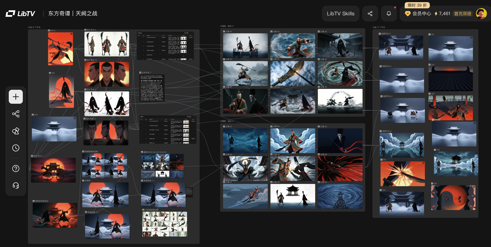

<style>
  .brand-grid{display:grid;grid-template-columns:repeat(4,minmax(0,1fr));gap:1.2vh 1vw;margin-top:3vh}
  .brand-grid.three{grid-template-columns:repeat(3,minmax(0,1fr))}
  .brand-card{border-top:1px solid currentColor;border-color:rgba(127,127,127,.32);padding:1.4vh 0 0;display:flex;flex-direction:column;gap:1vh;min-width:0}
  .brand-logo{display:inline-flex;align-items:center;gap:.55vw;min-width:0}
  .brand-mark{width:2.2vw;height:2.2vw;min-width:2.2vw;display:grid;place-items:center;border:1px solid currentColor;background:rgba(127,127,127,.08);font-family:var(--serif-en);font-size:.95vw;font-weight:800;line-height:1}
  .brand-name{font-family:var(--sans-zh);font-weight:700;font-size:max(15px,1.05vw);line-height:1.1;white-space:nowrap;overflow:hidden;text-overflow:ellipsis}
  .brand-name.en{font-family:var(--serif-en);font-style:normal;letter-spacing:.01em}
  .brand-desc{font-family:var(--sans-zh);font-size:max(12px,.9vw);line-height:1.5;opacity:.72}
  .case-board{display:grid;grid-template-columns:1.15fr .85fr;gap:3vw;align-items:start}
  .case-shot{border:1px solid rgba(127,127,127,.35);background:rgba(127,127,127,.08);padding:.8vw}
  .case-shot img{display:block;width:100%;height:auto}
  .case-strip{display:grid;grid-template-columns:repeat(3,1fr);gap:.8vw;margin-top:2vh}
  .case-tile{aspect-ratio:16/9;background:linear-gradient(135deg,var(--ink-tint),var(--paper-tint));border:1px solid rgba(127,127,127,.28);position:relative;overflow:hidden}
  .case-tile::before{content:"";position:absolute;inset:18% 12%;border:1px solid currentColor;opacity:.24}
  .case-tile::after{content:"";position:absolute;width:42%;height:42%;right:-8%;bottom:-12%;border-radius:50%;background:rgba(var(--ink-rgb),.18)}
  .dark .case-tile::after{background:rgba(var(--paper-rgb),.16)}
  .mini-label{font-family:var(--mono);font-size:max(10px,.76vw);letter-spacing:.18em;text-transform:uppercase;opacity:.58}
</style>

<section class="slide hero dark" data-animate="hero">
  <div class="chrome"><div class="left"><span>AIGC Primer</span><span class="sep"></span><span>Vol.02</span></div><div class="right"><span>01 / 24</span></div></div>
  <div class="frame" style="display:grid;gap:4vh;align-content:center;min-height:78vh">
    <div class="kicker" data-anim>AI GENERATED CONTENT · STARTER COURSE</div>
    <h1 class="h-hero" data-anim>AIGC<br/>入门教学</h1>
    <h2 class="h-sub" data-anim>从工具地图到案例工作流</h2>
    <p class="lead" style="max-width:62vw" data-anim>一小时建立基础认知：会选工具、会写需求、会拆流程、会用案例复盘。</p>
    <div class="meta-row" data-anim><span>Script</span><span>Image</span><span>Video</span><span>Music</span><span>Workflow</span><span>Codex</span></div>
  </div>
  <div class="foot"><div class="title">AIGC 入门教学 · 电子杂志版</div><div>Issue 02</div></div>
</section>

<section class="slide light">
  <div class="chrome"><div class="left"><span>Course Map</span><span class="sep"></span><span>60 Minutes</span></div><div class="right"><span>02 / 24</span></div></div>
  <div class="frame" style="padding-top:6vh">
    <div class="kicker">一小时课程，不追热点，先搭骨架。</div>
    <h2 class="h-xl">24 页，四段学习路径</h2>
    <div class="grid-4" style="margin-top:7vh">
      <div class="stat-card"><div class="stat-label">00-10 min</div><div class="stat-nb">概念</div><div class="stat-note">AIGC 是什么，能做什么，人负责什么。</div></div>
      <div class="stat-card"><div class="stat-label">10-30 min</div><div class="stat-nb">工具</div><div class="stat-note">脚本、生图、修图、视频、剪辑、音乐、工作流、Codex。</div></div>
      <div class="stat-card"><div class="stat-label">30-45 min</div><div class="stat-nb">流程</div><div class="stat-note">从需求到脚本、素材、视频、交付和复盘。</div></div>
      <div class="stat-card"><div class="stat-label">45-60 min</div><div class="stat-nb">案例</div><div class="stat-note">用 LibTV 截图拆解一个完整创作项目。</div></div>
    </div>
  </div>
  <div class="foot"><div class="title">课程总览</div><div>Overview</div></div>
</section>

<section class="slide dark">
  <div class="chrome"><div class="left"><span>Definition</span><span class="sep"></span><span>What is AIGC</span></div><div class="right"><span>03 / 24</span></div></div>
  <div class="frame grid-2-6-6" style="padding-top:8vh">
    <div><div class="kicker">一句话定义</div><h2 class="h-xl">不是替代人，<br/>是放大表达。</h2><p class="lead" style="margin-top:4vh">人负责目标、判断、审美和责任；AI 负责起草、发散、变体与批量执行。</p></div>
    <div class="callout"><div class="q-big">工具只是入口，真正要学的是“把任务拆成机器能接力的步骤”。</div><span class="callout-src">Teaching Note</span></div>
  </div>
  <div class="foot"><div class="title">AIGC 概述</div><div>Concept</div></div>
</section>

<section class="slide light">
  <div class="chrome"><div class="left"><span>Capability Map</span><span class="sep"></span><span>Production Line</span></div><div class="right"><span>04 / 24</span></div></div>
  <div class="frame" style="padding-top:6vh">
    <div class="kicker">六类能力，组成一条内容生产线。</div>
    <h2 class="h-xl">从想法到素材，再到作品</h2>
    <div class="grid-6" style="margin-top:6vh">
      <div class="pillar"><div class="ic"><i data-lucide="file-pen-line"></i></div><div class="t">创意脚本</div><div class="d">选题、结构、口播、分镜。</div></div>
      <div class="pillar"><div class="ic"><i data-lucide="image"></i></div><div class="t">创意生图</div><div class="d">海报、场景、角色、视觉参考。</div></div>
      <div class="pillar"><div class="ic"><i data-lucide="wand-sparkles"></i></div><div class="t">编辑修改</div><div class="d">扩图、修补、局部重绘、变体。</div></div>
      <div class="pillar"><div class="ic"><i data-lucide="video"></i></div><div class="t">视频生成</div><div class="d">文生视频、图生视频、镜头运动。</div></div>
      <div class="pillar"><div class="ic"><i data-lucide="workflow"></i></div><div class="t">工作流</div><div class="d">素材组织、节点编排、自动化协作。</div></div>
      <div class="pillar"><div class="ic"><i data-lucide="code-2"></i></div><div class="t">自动化编程</div><div class="d">脚本、页面、数据处理、批量生成。</div></div>
    </div>
  </div>
  <div class="foot"><div class="title">能力地图</div><div>Six Blocks</div></div>
</section>

<section class="slide hero light" data-animate="hero">
  <div class="chrome"><div class="left"><span>Act I</span><span class="sep"></span><span>Tool Map</span></div><div class="right"><span>05 / 24</span></div></div>
  <div class="frame" style="display:grid;gap:5vh;align-content:center;min-height:78vh">
    <div class="kicker" data-anim>工具会变，分工不会。</div>
    <h2 class="h-hero" style="font-size:8vw" data-anim>工具不是清单，<br/>是接力棒。</h2>
    <p class="lead" style="max-width:58vw" data-anim>用大模型写脚本，用图像模型找视觉，用视频模型做镜头，用剪辑和工作流工具完成交付。</p>
  </div>
  <div class="foot"><div class="title">第一幕 · 工具地图</div><div>Act I</div></div>
</section>

<section class="slide dark">
  <div class="chrome"><div class="left"><span>Tool Logos</span><span class="sep"></span><span>Landscape</span></div><div class="right"><span>06 / 24</span></div></div>
  <div class="frame" style="padding-top:5vh">
    <div class="kicker">先记住工具位置，再记住工具名字。</div>
    <h2 class="h-xl">AIGC 入门工具地图</h2>
    <div class="brand-grid" style="margin-top:5vh">
      <div class="brand-card"><div class="brand-logo"><span class="brand-mark">G</span><span class="brand-name en">Gemini</span></div><div class="brand-desc">脚本、资料、多模态理解。</div></div>
      <div class="brand-card"><div class="brand-logo"><span class="brand-mark">C</span><span class="brand-name en">ChatGPT</span></div><div class="brand-desc">结构化写作、改稿、头脑风暴。</div></div>
      <div class="brand-card"><div class="brand-logo"><span class="brand-mark">豆</span><span class="brand-name">豆包</span></div><div class="brand-desc">中文口播、标题、短视频文案。</div></div>
      <div class="brand-card"><div class="brand-logo"><span class="brand-mark">MJ</span><span class="brand-name en">Midjourney</span></div><div class="brand-desc">视觉参考、角色、海报主图。</div></div>
      <div class="brand-card"><div class="brand-logo"><span class="brand-mark">B</span><span class="brand-name en">Banana</span></div><div class="brand-desc">局部编辑、元素替换、统一风格。</div></div>
      <div class="brand-card"><div class="brand-logo"><span class="brand-mark">I2</span><span class="brand-name en">Imag2</span></div><div class="brand-desc">配图、修补、扩展、风格化素材。</div></div>
      <div class="brand-card"><div class="brand-logo"><span class="brand-mark">可</span><span class="brand-name">可灵</span></div><div class="brand-desc">图生视频、人物动作、短镜头。</div></div>
      <div class="brand-card"><div class="brand-logo"><span class="brand-mark">即</span><span class="brand-name">即梦</span></div><div class="brand-desc">文图视频、创意镜头、上手快。</div></div>
      <div class="brand-card"><div class="brand-logo"><span class="brand-mark">S2</span><span class="brand-name en">Seedance</span></div><div class="brand-desc">动态素材、风格化视频片段。</div></div>
      <div class="brand-card"><div class="brand-logo"><span class="brand-mark">剪</span><span class="brand-name">剪映</span></div><div class="brand-desc">字幕、粗剪、转场、封面。</div></div>
      <div class="brand-card"><div class="brand-logo"><span class="brand-mark">S</span><span class="brand-name en">Suno</span></div><div class="brand-desc">BGM、主题歌、情绪音乐。</div></div>
      <div class="brand-card"><div class="brand-logo"><span class="brand-mark">X</span><span class="brand-name en">Codex</span></div><div class="brand-desc">页面、脚本、批量自动化。</div></div>
    </div>
  </div>
  <div class="foot"><div class="title">工具 logo 地图</div><div>Logos</div></div>
</section>

<section class="slide light">
  <div class="chrome"><div class="left"><span>Script Tools</span><span class="sep"></span><span>Gemini / ChatGPT / Doubao</span></div><div class="right"><span>07 / 24</span></div></div>
  <div class="frame grid-2-7-5" style="padding-top:6vh">
    <div><div class="kicker">创意脚本</div><h2 class="h-xl">先让大模型把想法说清楚</h2><p class="lead" style="margin-top:3vh">脚本工具负责把“我想做个视频”变成可执行的选题、分镜、口播和素材清单。</p></div>
    <div style="display:grid;gap:2vh">
      <div class="rowline" style="grid-template-columns:1fr 2fr"><div class="k">Gemini</div><div class="v">适合多模态理解、资料整理、长上下文分析。</div></div>
      <div class="rowline" style="grid-template-columns:1fr 2fr"><div class="k">ChatGPT</div><div class="v">适合结构化写作、改稿、头脑风暴、课堂问答。</div></div>
      <div class="rowline" style="grid-template-columns:1fr 2fr"><div class="k">豆包</div><div class="v">中文表达友好，适合口播、标题、短视频文案。</div></div>
    </div>
  </div>
  <div class="foot"><div class="title">脚本工具</div><div>Writing</div></div>
</section>

<section class="slide dark">
  <div class="chrome"><div class="left"><span>Prompt Formula</span><span class="sep"></span><span>Brief not Magic</span></div><div class="right"><span>08 / 24</span></div></div>
  <div class="frame" style="padding-top:6vh">
    <div class="kicker">提示词不是咒语，是需求说明书。</div>
    <h2 class="h-xl">角色 + 任务 + 背景 + 受众 + 格式 + 约束 + 示例</h2>
    <div class="pipeline-section">
      <div class="pipeline-label">Prompt Checklist</div>
      <div class="pipeline" data-cols="4">
        <div class="step"><div class="step-nb">01</div><div class="step-title">定角色</div><div class="step-desc">你是短视频编导、课程老师或品牌策划。</div></div>
        <div class="step"><div class="step-nb">02</div><div class="step-title">给背景</div><div class="step-desc">产品、平台、受众、时长、风格和素材。</div></div>
        <div class="step"><div class="step-nb">03</div><div class="step-title">定格式</div><div class="step-desc">表格输出：镜头、台词、字幕、音效。</div></div>
        <div class="step"><div class="step-nb">04</div><div class="step-title">给标准</div><div class="step-desc">不要夸大，每句字幕不超过 18 字。</div></div>
      </div>
    </div>
  </div>
  <div class="foot"><div class="title">提示词方法</div><div>Method</div></div>
</section>

<section class="slide light">
  <div class="chrome"><div class="left"><span>Image Generation</span><span class="sep"></span><span>Midjourney</span></div><div class="right"><span>09 / 24</span></div></div>
  <div class="frame grid-2-7-5" style="padding-top:6vh">
    <div><div class="kicker">创意生图</div><h2 class="h-xl">MJ 负责把抽象想法变成视觉方向</h2><p class="lead" style="margin-top:3vh">先用脚本确定画面，再生成风格参考、海报主视觉、角色设定和场景概念。</p><div class="callout" style="margin-top:4vh"><div class="q-big">先找方向，不急着定稿。</div><span class="callout-src">Image Workflow</span></div></div>
    <figure class="frame-img r-16x10" style="margin-top:6vh;background:rgba(var(--ink-rgb),.06);display:grid;place-items:center">
      <div style="width:86%;height:76%;display:grid;grid-template-columns:repeat(5,1fr);grid-template-rows:repeat(4,1fr);gap:10px">
        <div style="grid-column:1/4;grid-row:1/3;background:var(--ink)"></div><div style="grid-column:4/6;grid-row:1/2;background:var(--paper-tint)"></div><div style="grid-column:4/6;grid-row:2/5;background:var(--ink-tint)"></div><div style="grid-column:1/3;grid-row:3/5;background:var(--paper)"></div><div style="grid-column:3/4;grid-row:3/5;background:var(--paper-tint)"></div>
      </div>
      <figcaption class="img-cap">Style board · 角色 / 场景 / 情绪 / 构图</figcaption>
    </figure>
  </div>
  <div class="foot"><div class="title">Midjourney · 图像生成</div><div>Image</div></div>
</section>

<section class="slide dark">
  <div class="chrome"><div class="left"><span>Image Editing</span><span class="sep"></span><span>Banana / Imag2</span></div><div class="right"><span>10 / 24</span></div></div>
  <div class="frame grid-2-6-6" style="padding-top:7vh">
    <div><div class="kicker">编辑修改</div><h2 class="h-xl">好图通常不是一次生成，而是修出来的</h2></div>
    <div style="display:grid;gap:2.4vh">
      <div class="callout"><div class="q-big">Banana：局部编辑、元素替换、风格延展。</div><span class="callout-src">Keep subject consistency</span></div>
      <div class="callout"><div class="q-big">Imag2：统一配图、扩图修补、从案例截图提炼视觉语言。</div><span class="callout-src">One style per deck</span></div>
    </div>
  </div>
  <div class="foot"><div class="title">图片编辑</div><div>Edit</div></div>
</section>

<section class="slide light">
  <div class="chrome"><div class="left"><span>Video Generation</span><span class="sep"></span><span>Kling / Jimeng / Seedance 2.0</span></div><div class="right"><span>11 / 24</span></div></div>
  <div class="frame" style="padding-top:6vh">
    <div class="kicker">视频模型负责镜头，剪辑负责叙事。</div>
    <h2 class="h-xl">把每个镜头写成“可拍摄”的句子</h2>
    <div class="grid-3" style="margin-top:7vh">
      <div class="pillar"><div class="ic">01</div><div class="t">可灵</div><div class="d">图生视频、人物动作、商业短片片段。</div></div>
      <div class="pillar"><div class="ic">02</div><div class="t">即梦</div><div class="d">创意镜头、国内容易上手的文图视频入口。</div></div>
      <div class="pillar"><div class="ic">03</div><div class="t">Seedance 2.0</div><div class="d">短镜头生成、风格化视频探索、动态素材。</div></div>
    </div>
  </div>
  <div class="foot"><div class="title">视频生成</div><div>Video</div></div>
</section>

<section class="slide dark">
  <div class="chrome"><div class="left"><span>Editing & Music</span><span class="sep"></span><span>CapCut / Suno</span></div><div class="right"><span>12 / 24</span></div></div>
  <div class="frame grid-2-6-6" style="padding-top:7vh">
    <div><div class="kicker">最后一公里</div><h2 class="h-xl">剪辑和音乐决定作品像不像成品</h2><p class="lead" style="margin-top:3vh">AI 片段只是素材，发布级作品还需要节奏、字幕、封面、BGM 和人工校对。</p></div>
    <div><div class="rowline" style="grid-template-columns:1fr 2fr"><div class="k">剪映</div><div class="v">粗剪、字幕、转场、封面、导出。</div></div><div class="rowline" style="grid-template-columns:1fr 2fr"><div class="k">Suno</div><div class="v">按情绪、速度、风格生成 BGM 或主题歌。</div></div><div class="rowline" style="grid-template-columns:1fr 2fr"><div class="k">检查</div><div class="v">字幕错别字、音乐授权、节奏是否服务主题。</div></div></div>
  </div>
  <div class="foot"><div class="title">剪辑与音乐</div><div>Finish</div></div>
</section>

<section class="slide hero light" data-animate="hero">
  <div class="chrome"><div class="left"><span>Workflow Tools</span><span class="sep"></span><span>TapNow / LibTV / Codex</span></div><div class="right"><span>13 / 24</span></div></div>
  <div class="frame" style="display:grid;gap:5vh;align-content:center;min-height:78vh">
    <div class="kicker" data-anim>综合工具负责“把事串起来”。</div>
    <h2 class="h-hero" style="font-size:7.4vw" data-anim>TapNow<br/>LibTV<br/>Codex</h2>
    <p class="lead" style="max-width:62vw" data-anim>一个偏创意画布，一个偏影视工作流，一个偏代码和自动化执行。</p>
  </div>
  <div class="foot"><div class="title">综合类工作流工具</div><div>Workflow</div></div>
</section>

<section class="slide light">
  <div class="chrome"><div class="left"><span>Workflow Tools</span><span class="sep"></span><span>Roles</span></div><div class="right"><span>14 / 24</span></div></div>
  <div class="frame" style="padding-top:6vh">
    <div class="kicker">三类工作流工具，各自解决不同问题。</div>
    <h2 class="h-xl">从画布、影视到自动化编程</h2>
    <div class="grid-3" style="margin-top:7vh">
      <div class="pillar"><div class="ic">T</div><div class="t">TapNow</div><div class="d">适合创意画布、素材汇聚、灵感探索和多节点协作。</div></div>
      <div class="pillar"><div class="ic">L</div><div class="t">LibTV</div><div class="d">适合影视项目的角色、分镜、镜头、视频素材组织。</div></div>
      <div class="pillar"><div class="ic">X</div><div class="t">Codex</div><div class="d">适合写脚本、做页面、批量处理素材和搭建自动化流程。</div></div>
    </div>
  </div>
  <div class="foot"><div class="title">工作流工具角色</div><div>Roles</div></div>
</section>

<section class="slide dark">
  <div class="chrome"><div class="left"><span>Basic Workflow</span><span class="sep"></span><span>N+1</span></div><div class="right"><span>15 / 24</span></div></div>
  <div class="frame" style="padding-top:6vh">
    <div class="kicker">基本工作流：一个目标，多个工具接力。</div>
    <h2 class="h-xl">Brief → Script → Image → Video → Edit → Publish → Review</h2>
    <div class="pipeline-section">
      <div class="pipeline-label">Starter Pipeline</div>
      <div class="pipeline" data-cols="6">
        <div class="step"><div class="step-nb">01</div><div class="step-title">需求</div><div class="step-desc">目标、受众、平台、时长。</div></div>
        <div class="step"><div class="step-nb">02</div><div class="step-title">脚本</div><div class="step-desc">分镜、口播、字幕、素材表。</div></div>
        <div class="step"><div class="step-nb">03</div><div class="step-title">图像</div><div class="step-desc">角色、场景、主视觉、统一风格。</div></div>
        <div class="step"><div class="step-nb">04</div><div class="step-title">视频</div><div class="step-desc">短镜头生成，逐段拼接。</div></div>
        <div class="step"><div class="step-nb">05</div><div class="step-title">剪辑</div><div class="step-desc">字幕、音乐、节奏、封面。</div></div>
        <div class="step"><div class="step-nb">06</div><div class="step-title">复盘</div><div class="step-desc">沉淀提示词和模板。</div></div>
      </div>
    </div>
  </div>
  <div class="foot"><div class="title">基础工作流</div><div>Pipeline</div></div>
</section>

<section class="slide light">
  <div class="chrome"><div class="left"><span>Case Study</span><span class="sep"></span><span>LibTV Screenshot</span></div><div class="right"><span>16 / 24</span></div></div>
  <div class="frame case-board" style="padding-top:5vh">
    <div><div class="kicker">教学案例使用图片一。</div><h2 class="h-xl">东方奇谭｜天阙之战</h2><p class="lead" style="margin-top:3vh">这张图不是单张作品，而是一整套创意生产流程：角色、分镜、脚本、画面、视频镜头、连线关系。</p><div class="callout" style="margin-top:4vh"><div class="q-big">让学生看到“AI 作品”背后的工作台。</div><span class="callout-src">Case Anchor</span></div></div>
    <figure class="case-shot"><figcaption class="img-cap">Source screenshot · LibTV workflow canvas</figcaption></figure>
  </div>
  <div class="foot"><div class="title">案例总览</div><div>Case</div></div>
</section>

<section class="slide dark">
  <div class="chrome"><div class="left"><span>Case Anatomy</span><span class="sep"></span><span>What to Observe</span></div><div class="right"><span>17 / 24</span></div></div>
  <div class="frame" style="padding-top:6vh">
    <div class="kicker">把一张复杂截图拆成四层。</div>
    <h2 class="h-xl">角色、分镜、脚本、镜头素材</h2>
    <div class="grid-4" style="margin-top:6vh">
      <div class="stat-card"><div class="stat-label">Layer 01</div><div class="stat-nb">角色</div><div class="stat-note">人物造型、服装、姿态、正侧背视图。</div></div>
      <div class="stat-card"><div class="stat-label">Layer 02</div><div class="stat-nb">分镜</div><div class="stat-note">镜头编号、景别、动作、画面节奏。</div></div>
      <div class="stat-card"><div class="stat-label">Layer 03</div><div class="stat-nb">场景</div><div class="stat-note">楼阁、云海、夜色、红日、战斗氛围。</div></div>
      <div class="stat-card"><div class="stat-label">Layer 04</div><div class="stat-nb">视频</div><div class="stat-note">从静态画面到动态镜头，再到剪辑成片。</div></div>
    </div>
  </div>
  <div class="foot"><div class="title">案例拆解</div><div>Anatomy</div></div>
</section>

<section class="slide light">
  <div class="chrome"><div class="left"><span>Case Visual Style</span><span class="sep"></span><span>Imag2 Direction</span></div><div class="right"><span>18 / 24</span></div></div>
  <div class="frame grid-2-7-5" style="padding-top:6vh">
    <div><div class="kicker">统一配图风格</div><h2 class="h-xl">从截图提炼视觉语言</h2><p class="lead" style="margin-top:3vh">给 Imag2 或同类图像工具的方向：深色背景、东方武侠、红黑对比、云海楼阁、分镜卡片、连线工作台。</p></div>
    <div><div class="case-strip"><div class="case-tile"></div><div class="case-tile"></div><div class="case-tile"></div></div><div class="case-strip"><div class="case-tile"></div><div class="case-tile"></div><div class="case-tile"></div></div><div class="img-cap">Unified visual system · dark board / red accent / cinematic frames</div></div>
  </div>
  <div class="foot"><div class="title">Imag2 配图方向</div><div>Style</div></div>
</section>

<section class="slide dark">
  <div class="chrome"><div class="left"><span>Case Prompt</span><span class="sep"></span><span>Reusable Template</span></div><div class="right"><span>19 / 24</span></div></div>
  <div class="frame" style="padding-top:6vh">
    <div class="kicker">把案例转成可复用提示词。</div>
    <h2 class="h-xl">面向“东方奇谭”项目的提示词模板</h2>
    <div class="callout" style="margin-top:6vh;max-width:82vw">
      <div class="q-big">你是影视分镜导演。请基于“东方奇谭｜天阙之战”生成 8 个镜头分镜，风格为东方武侠、云海楼阁、红黑对比、史诗感。输出表格：镜头编号、画面、动作、景别、镜头运动、字幕、音效、用于生图/视频的提示词。</div>
      <span class="callout-src">Prompt Template</span>
    </div>
  </div>
  <div class="foot"><div class="title">案例提示词</div><div>Prompt</div></div>
</section>

<section class="slide light">
  <div class="chrome"><div class="left"><span>Case Workflow</span><span class="sep"></span><span>Step by Step</span></div><div class="right"><span>20 / 24</span></div></div>
  <div class="frame" style="padding-top:6vh">
    <div class="kicker">课堂演示步骤</div>
    <h2 class="h-xl">用一张截图讲完整 AIGC 流程</h2>
    <div class="pipeline-section">
      <div class="pipeline-label">Case Demonstration</div>
      <div class="pipeline">
        <div class="step"><div class="step-nb">01</div><div class="step-title">读图</div><div class="step-desc">识别角色、场景、镜头、连接关系。</div></div>
        <div class="step"><div class="step-nb">02</div><div class="step-title">补脚本</div><div class="step-desc">让大模型生成分镜表和口播。</div></div>
        <div class="step"><div class="step-nb">03</div><div class="step-title">配图</div><div class="step-desc">用 Imag2 方向统一角色和场景。</div></div>
        <div class="step"><div class="step-nb">04</div><div class="step-title">成片</div><div class="step-desc">视频工具生成短镜头，剪映合成。</div></div>
        <div class="step"><div class="step-nb">05</div><div class="step-title">自动化</div><div class="step-desc">Codex 整理文件、页面、教案和清单。</div></div>
      </div>
    </div>
  </div>
  <div class="foot"><div class="title">案例流程</div><div>Demo</div></div>
</section>

<section class="slide hero dark" data-animate="hero">
  <div class="chrome"><div class="left"><span>Act III</span><span class="sep"></span><span>Practice</span></div><div class="right"><span>21 / 24</span></div></div>
  <div class="frame" style="display:grid;gap:5vh;align-content:center;min-height:78vh">
    <div class="kicker" data-anim>让学员动手，不只是听工具名。</div>
    <h2 class="h-hero" style="font-size:8vw" data-anim>8 分钟，<br/>完成一张创作卡。</h2>
    <p class="lead" style="max-width:58vw" data-anim>主题、受众、脚本、视觉、音乐、检查，每组交一张卡即可。</p>
  </div>
  <div class="foot"><div class="title">课堂练习</div><div>Practice</div></div>
</section>

<section class="slide light">
  <div class="chrome"><div class="left"><span>Practice Card</span><span class="sep"></span><span>Workshop</span></div><div class="right"><span>22 / 24</span></div></div>
  <div class="frame" style="padding-top:6vh">
    <div class="kicker">每组完成一个微项目。</div>
    <h2 class="h-xl">创作卡六格</h2>
    <div class="grid-6" style="margin-top:6vh">
      <div class="pillar"><div class="ic">A</div><div class="t">主题</div><div class="d">产品、活动或知识点。</div></div>
      <div class="pillar"><div class="ic">B</div><div class="t">受众</div><div class="d">给谁看，为什么看。</div></div>
      <div class="pillar"><div class="ic">C</div><div class="t">脚本</div><div class="d">3-5 个镜头。</div></div>
      <div class="pillar"><div class="ic">D</div><div class="t">视觉</div><div class="d">一条图像提示词。</div></div>
      <div class="pillar"><div class="ic">E</div><div class="t">音乐</div><div class="d">情绪、速度、人声。</div></div>
      <div class="pillar"><div class="ic">F</div><div class="t">检查</div><div class="d">事实、版权、能否发布。</div></div>
    </div>
  </div>
  <div class="foot"><div class="title">课堂练习卡</div><div>Workshop</div></div>
</section>

<section class="slide dark">
  <div class="chrome"><div class="left"><span>Risks</span><span class="sep"></span><span>Human Review</span></div><div class="right"><span>23 / 24</span></div></div>
  <div class="frame grid-2-6-6" style="padding-top:7vh">
    <div><div class="kicker">越快，越要慢一步检查。</div><h2 class="h-xl">人工判断是最后一道质量门</h2></div>
    <div>
      <div class="rowline" style="grid-template-columns:1fr 2fr"><div class="k">事实</div><div class="v">数据、人物、机构、政策必须查证。</div></div>
      <div class="rowline" style="grid-template-columns:1fr 2fr"><div class="k">版权</div><div class="v">素材来源、音乐授权、肖像使用要确认。</div></div>
      <div class="rowline" style="grid-template-columns:1fr 2fr"><div class="k">品牌</div><div class="v">不做误导承诺，不生成敏感或侵权元素。</div></div>
    </div>
  </div>
  <div class="foot"><div class="title">风险与边界</div><div>Review</div></div>
</section>

<section class="slide hero dark" data-animate="hero">
  <div class="chrome"><div class="left"><span>Closing</span><span class="sep"></span><span>Takeaways</span></div><div class="right"><span>24 / 24</span></div></div>
  <div class="frame" style="display:grid;gap:5vh;align-content:center;min-height:78vh">
    <div class="kicker" data-anim>最后记住三句话。</div>
    <h2 class="h-hero" style="font-size:8vw" data-anim>会提问，<br/>会拆解，<br/>会验收。</h2>
    <div class="meta-row" data-anim><span>Ask better</span><span>Split tasks</span><span>Review always</span><span>Build workflow</span></div>
  </div>
  <div class="foot"><div class="title">课后任务：同一主题做 3 版脚本 + 1 组视觉参考 + 1 次人工验收</div><div>Q&A</div></div>
</section>
